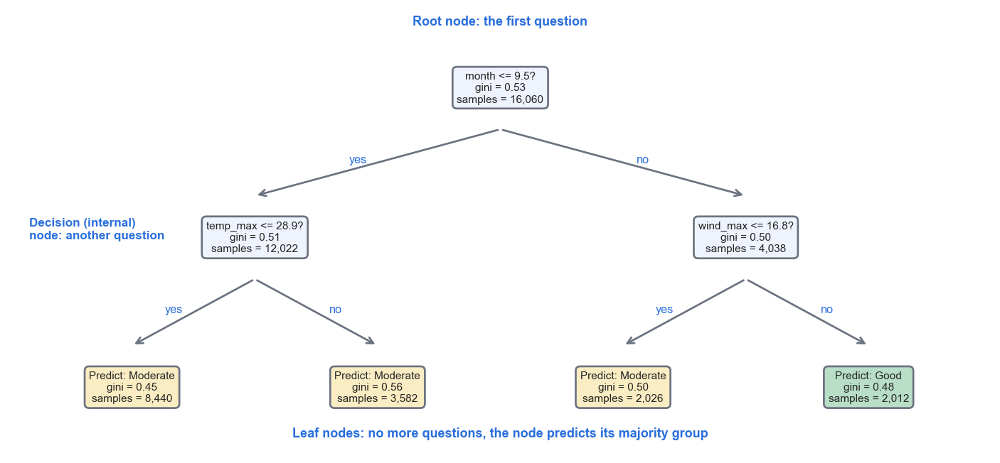
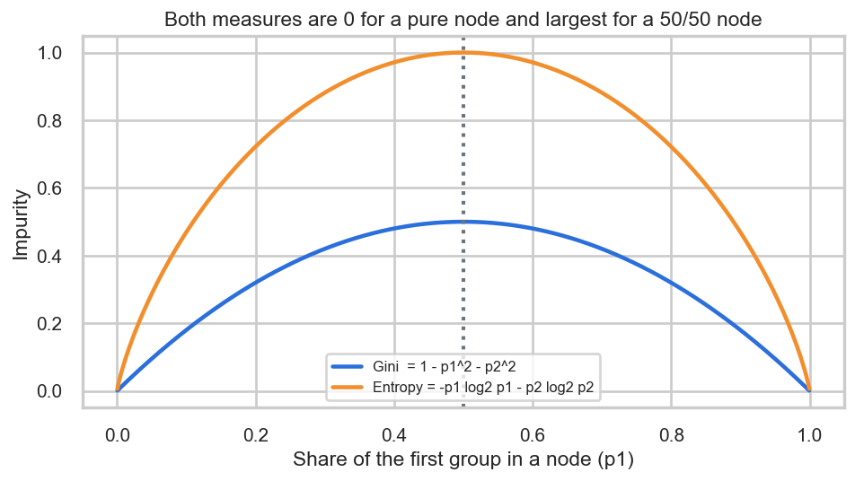
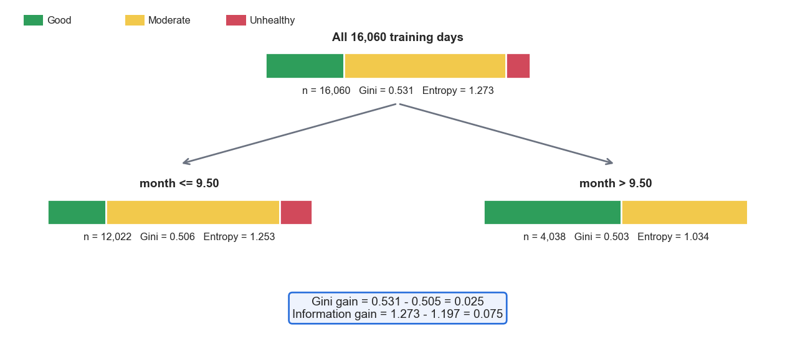
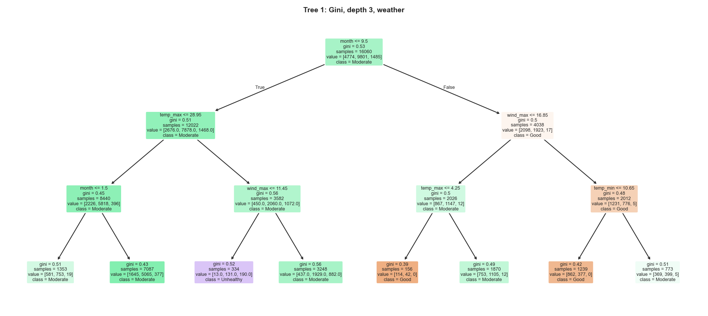
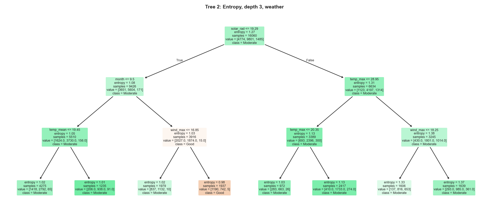
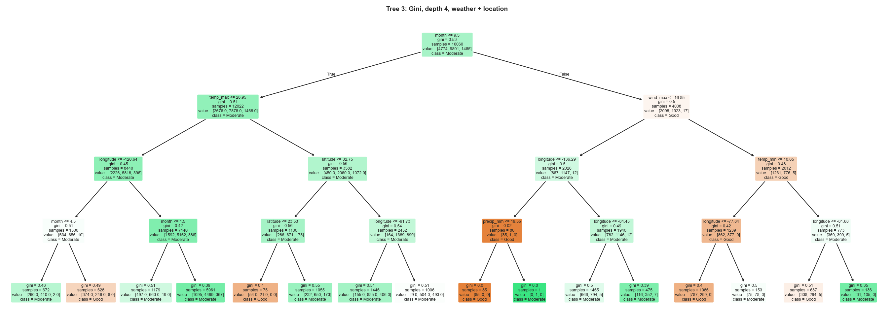
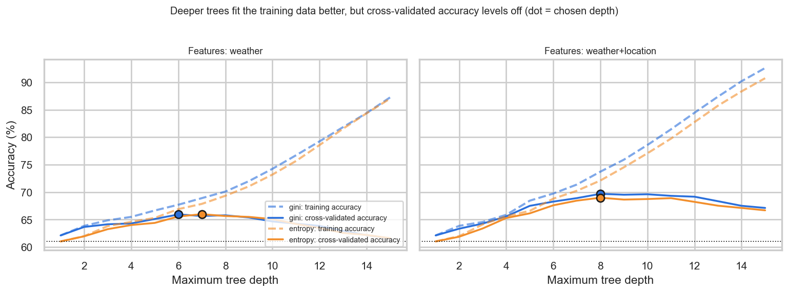
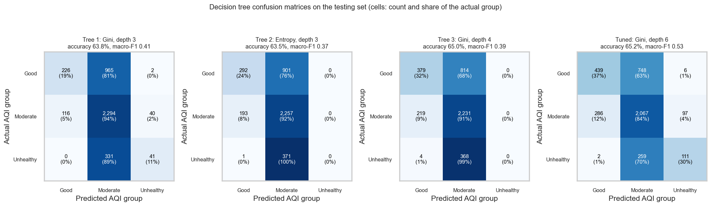
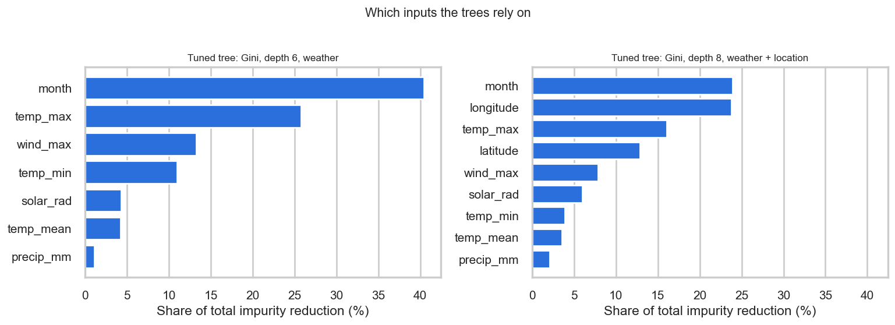

DecTrees
Which weather rules best separate clean days from unhealthy ones?
This tab applies decision trees to the same labeled city-days and the same training and testing sets as the Naive Bayes tab, so the two methods can be compared fairly. It is organized into Overview, Data Prep, Code, Results and Conclusions.
Overview
A decision tree is a flowchart of yes/no questions about the inputs. A day enters at the top (the root node), is sent left or right depending on the answer to a question such as "is the month October or later?", meets another question in an internal (decision) node, and finally lands in a leaf node, which holds the prediction (the most common group among the training days that ended up there). Trees are popular because the finished model can be read, explained and drawn, they need no scaling of the inputs, they handle numbers and categories, and they capture interactions, such as "hot and calm". They are used for medical diagnosis, credit decisions, customer behavior, and many other classification tasks (a variant predicts numbers instead of groups).

How a tree chooses its questions: Gini, entropy and information gain
A tree is grown from the top. At every node, the algorithm tries every input and every possible cut point and keeps the question that makes the two resulting groups as pure as possible, meaning each group is dominated by a single AQI group. To compare questions, purity needs a number, and two standard measures are used. Gini impurity is 1 - (p1² + p2² + ... + pk²), where pi is the share of days in the node that belong to group i. Entropy is -(p1 log2 p1 + p2 log2 p2 + ... + pk log2 pk), measured in bits. Both are 0 for a node that holds only one group and largest when the groups are mixed in equal shares (for two groups the maximum is 0.5 for Gini and 1 bit for entropy). They are used because they turn "how mixed is this node?" into a number that can be compared across candidate questions. Gini is slightly cheaper to compute, while entropy punishes mixed nodes slightly more, and they usually select similar trees.
The quality of a question is its gain: the impurity of the parent node minus the weighted average impurity of the two child nodes, where each child is weighted by the share of days it receives. When entropy is the impurity, this gain is called information gain, and with Gini it is the Gini decrease. The question with the largest gain is chosen, the process repeats inside each child, and it stops when a node is pure, too small, or a depth limit is reached.

A worked example from the training data
Take the root question chosen by the Gini tree, "is the month at most 9.5" (that is, January to September). The 16,060 training days contain 4,774 Good, 9,801 Moderate and 1,485 Unhealthy days, so the shares are 0.297, 0.610 and 0.092.
- Gini of the parent = 1 - (0.297² + 0.610² + 0.092²) = 0.531.
- Entropy of the parent = -(0.297 log2 0.297 + 0.610 log2 0.610 + 0.092 log2 0.092) = 1.273 bits.
- The question sends 12,022 days to the left (Gini 0.506, entropy 1.253) and 4,038 days to the right (Gini 0.503, entropy 1.034). The right-hand group, October to December, holds 17 Unhealthy days out of 4,038.
- Weighted Gini of the children = (12,022 × 0.506 + 4,038 × 0.503) / 16,060 = 0.505, so the Gini gain is 0.531 - 0.505 = 0.025.
- Weighted entropy of the children = (12,022 × 1.253 + 4,038 × 1.034) / 16,060 = 1.197, so the information gain is 1.273 - 1.197 = 0.075 bits.

The two measures do not always agree: on this same data, the Gini criterion chooses the month as its first question, while the entropy criterion chooses solar radiation (see the two trees in the Results section).
Why there is an infinite number of possible trees
Many different trees can be built from the same data. A numeric input such as temperature can be cut at any real number, and every value between two neighboring observed temperatures separates the training days in exactly the same way yet gives a different tree for new days, so the choices are unlimited. Beyond thresholds, any input can be reused at any depth and in any order, the depth and the stopping rules are free parameters, and different criteria (Gini or entropy) or different random tie-breaking give different trees. A tree allowed to grow until every leaf is pure can even memorize the training data, which gives one more valid tree. Finding the single best tree is computationally intractable (the problem is known to be NP-complete), so real algorithms grow the tree greedily, choosing the best question at each step without looking ahead. This means that the result is a good tree, never provably the best one, and it also means that the depth must be controlled to avoid memorizing noise.
Data Prep
Decision trees use the same labeled sample and the same training and testing sets as the Naive Bayes tab, which makes the two methods directly comparable. The details of the labels, the choice of inputs and the disjoint split are repeated below.
A supervised method needs labeled data: every row must come with the correct answer so that the method can learn from it and be graded against it. Only rows with a known label can be used, and here every one of the 20,075 city-days has one. The label is the AQI group of the day. The cleaned table already contained the official EPA category of each day (computed from the pollutant readings in Part 1), and the four upper categories were merged into three groups because Unhealthy (293 days) and Very Unhealthy (71 days) are too rare to learn on their own and no Hazardous day occurred: Good (5,967 days, 29.7%), Moderate (12,251 days, 61.0%) and Unhealthy (1,857 days, 9.2%), the last meaning an AQI of 101 or more (unhealthy for sensitive groups or worse).
The inputs are the daily weather: mean, maximum and minimum temperature, precipitation, maximum wind speed, solar radiation, and the month of the year. No pollutant column is used, because the label is computed from pollutant readings, so including them would hand the answer to the method. The city is also left out, which keeps the question the one asked in the Introduction: can the air quality group be forecast from the weather alone? A second experiment adds each city's latitude and longitude to test how much location contributes.

Training set and testing set
The labeled rows were split at random into a training set (80%, 16,060 rows), which the method uses to learn, and a testing set (20%, 4,015 rows), which is kept aside and used only once, to measure how well the learned rules work on days it has never seen. The split was stratified, which means that each set has the same share of Good, Moderate and Unhealthy days as the whole sample, and the random seed was fixed (42) so the split can be reproduced. The two sets must be disjoint, with no row in both. If a day were in both sets, the method could simply memorize it and the test would measure memory, not the ability to predict new days, so accuracy would look better than it really is. Every row carries an identifier (row_id), and the code confirms that the two sets share 0 rows.


One caution applies to any random split of daily data: days next to each other, and days from the same city, resemble each other, so a random split can be slightly optimistic. A harder check is reported in the Results section, where the rules are learned from January to September and tested on October to December.
Unlike Naive Bayes, trees need no scaling or binning. A question such as "temperature at most 28.95" depends only on the order of the values, so negative temperatures and very different units cause no problem. The raw numeric columns were used as they are. Two input sets were tested: the seven weather columns, and the same seven plus latitude and longitude. The depth of the tuned trees was chosen by 5-fold cross-validation inside the training set (the training days are divided into five parts, each part takes a turn as a pretend test set), so the real testing set was never used to make any choice.
- nb_dt_labeled_dataset.csv: the full labeled sample (20,075 city-days, weather features plus the label)
- daily_city_air_weather_clean.csv: the cleaned daily table the sample comes from
- Raw data: daily weather, hourly air quality (the AQI that defines the label) and city locations
- dt_train.csv and dt_test.csv: the training and testing sets used by the trees (raw weather columns, latitude, longitude, label and
row_id)
Code
The analysis is written in Python with pandas, numpy, scikit-learn (DecisionTreeClassifier, plot_tree, cross_val_score, train_test_split), matplotlib and seaborn.
06_naive_bayes_trees.pyon GitHub: builds the labels and the split, grows every tree, selects depths by cross-validation and draws every figure on this tab- nb_dt_results.json: every number quoted on this tab
Results
All accuracies are measured on the testing set (4,015 days), and always answering Moderate would be correct on 61.0% of them. Three trees were built to show the effect of the splitting criterion and the inputs: Tree 1 (Gini, depth 3, weather), Tree 2 (entropy, depth 3, weather) and Tree 3 (Gini, depth 4, weather plus location). Two further trees use the depth that cross-validation preferred.
| Tree | Criterion | Depth | Leaves | Training accuracy | Testing accuracy | Macro-F1 | Recall: Unhealthy |
|---|---|---|---|---|---|---|---|
| Always predict Moderate (baseline) | - | 0 | 1 | 61.0% | 61.0% | 0.25 | 0% |
| Tree 1: weather | gini | 3 | 8 | 64.9% | 63.8% | 0.41 | 11% |
| Tree 2: weather | entropy | 3 | 8 | 63.8% | 63.5% | 0.37 | 0% |
| Tree 3: weather + location | gini | 4 | 16 | 65.9% | 65.0% | 0.39 | 0% |
| Tuned: weather | gini | 6 | 61 | 67.7% | 65.2% | 0.53 | 30% |
| Tuned: weather + location | gini | 8 | 204 | 73.7% | 70.7% | 0.62 | 39% |
Tree 1: Gini, depth 3, weather

The first question is the month: of the 1,485 Unhealthy days in the training set, 1,468 fall in January to September and only 17 in October to December. For the warm months, the tree asks whether the maximum temperature exceeded 28.95 C and then whether the wind speed was at most 11.45 km/h. The only leaf that predicts Unhealthy is the hot, calm one (334 training days, of which 190 were Unhealthy, 131 Moderate and 13 Good). In the October to December branch, cold days lean Good: calm days with a maximum temperature of 4.25 C or less, and windy days with a minimum temperature of 10.65 C or less. On the testing set the tree reaches 63.8% accuracy and finds 11% of Unhealthy days, but when it does predict Unhealthy it is right 49% of the time.
Tree 2: entropy, depth 3, weather

With entropy the root question is solar radiation at most 19.29, not the month, so the same data and depth produce a different tree. The only leaf that predicts Good collects dim days from October to December with strong winds (1,937 training days, 1,190 of them Good). No leaf predicts Unhealthy, so the tree finds none of the Unhealthy days on the testing set. Its accuracy is 63.5%, close to Tree 1 (63.8%), which shows that the two criteria can differ in structure while performing about the same.
Tree 3: Gini, depth 4, weather plus location

Allowed to use location, the tree asks about longitude and latitude in eight of its fifteen questions, which splits the country into regions before weather conditions are considered. One branch (calm days from October to December with longitude at most -136.29, which matches only the two far-western cities in the study, Honolulu and Anchorage) ends in a leaf of 85 days that were all Good. Accuracy rises to 65.0%, but the tree still never predicts Unhealthy on the testing set.
Choosing the depth, and the tuned trees

Deeper trees fit the training days better and better, but the cross-validated accuracy peaks early and then declines, which is the signature of overfitting. The tuned weather-only tree (Gini, depth 6, 61 leaves) reaches 65.2% accuracy and macro-F1 0.53, and finds 30% of the Unhealthy days with 52% precision. With location added, the tuned tree (depth 8, 204 leaves) reaches 70.7% accuracy and macro-F1 0.62 and finds 39% of the Unhealthy days.


A harder test: learn on January to September, test on October to December
Because daily weather and air quality are strongly related from one day to the next, a random split can be optimistic. In a time-based test, the trees were grown on January to September (15,015 days) and graded on October to December (5,060 days), where always answering Moderate is correct on 47.8% of days. Tree 1 simply answers Moderate every time (47.8% accuracy, the same as the baseline), and the tuned weather tree reaches 55.4% accuracy and macro-F1 0.39, but finds only 5% of the few Unhealthy days. A tree trained on warm months has little to learn about the cool-season days it is asked to judge, so forecasting into a new season is much harder than the random split suggests.
Conclusions
The month and the temperature are the strongest signals in the weather. They account for about 40% and 41% of the tuned weather tree's decisions, followed by wind speed (13%). Almost all Unhealthy days (1,468 of 1,485 in the training set) fall between January and September, and the tree's one Unhealthy rule is a hot, calm day. Precipitation barely matters, consistent with the earlier finding that rainy and dry days had nearly the same fine-particle levels.
Readable trees are not good forecasters here. The three small trees predict Moderate for most days and find few or none of the Unhealthy days, and even the cross-validated tree reaches 65.2% accuracy against a 61.0% baseline, a gain of about 4 percentage points. Location matters as much as weather: adding latitude and longitude lifts accuracy to 70.7% and macro-F1 to 0.62, so where a day happens carries information that the weather alone does not.
Comparison with Naive Bayes. On the same testing set, Naive Bayes (binned) is less accurate (50.1%) but finds 70% of the Unhealthy days, whereas the tuned tree is more accurate (65.2%) but finds only 30%. Naive Bayes behaves like a cautious alarm that is often wrong, and the tree behaves like a conservative forecaster that rarely warns. Neither is good enough to be a stand-alone warning system, and the later methods in this project will test whether ensembles of trees can do better.
Limits. The AQI is a modeled value, one year of data was used, the testing set shares the weather patterns of the training set, and the greedy tree-building method gives a good tree but not the only possible one. Rare events such as wildfire smoke cannot be predicted from local weather at all.